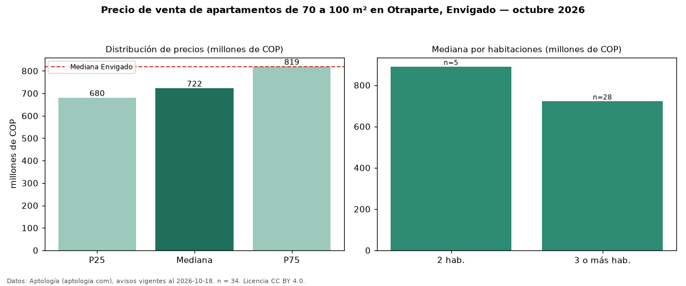

Precio de venta de apartamentos de 70 a 100 m² en Otraparte, Envigado — octubre 2026
Con 34 avisos vigentes, el precio mediano de apartamentos de 70 a 100 m² en venta en Otraparte, Envigado es COP 722 millones. Eso es 19 % menos que la mediana de todos los apartamentos en venta de Otraparte (COP 892 millones, n = 108); este segmento reúne el 31 % de esos avisos. Por metro cuadrado, la mediana es COP 8,22 millones/m² (n = 34), 4 % por encima del conjunto de referencia (COP 7,87 millones/m²). El área mediana anunciada es 89 m². El segmento con más oferta es el de 3 o más habitaciones (28 avisos, mediana COP 722 millones); pasar de 2 habitaciones a 3 o más habitaciones cambia la mediana −19 %. La administración mediana declarada es COP 535.000 al mes (n = 25). El estrato más frecuente es 5 (77 % de los avisos con estrato). La mediana de todos los apartamentos en venta de Envigado es COP 820 millones (−12 % de diferencia). Datos: Aptología (aptologia.com), CC BY 4.0 — https://www.aptologia.com/venta/envigado/otraparte. Archivos: PDF, CSV con las cifras y gráfica PNG.

| Avisos únicos | 34 |
|---|---|
| Percentil 25 | COP 680.000.000 |
| Mediana | COP 722.500.000 |
| Percentil 75 | COP 819.250.000 |
| Mediana por m² | COP 8.218.770 |
Fuente: avisos vigentes de portales inmobiliarios recopilados por Aptología, deduplicados (mínimo 30 avisos únicos por celda). Precios pedidos, no cerrados. Fecha: 2026-10-18.